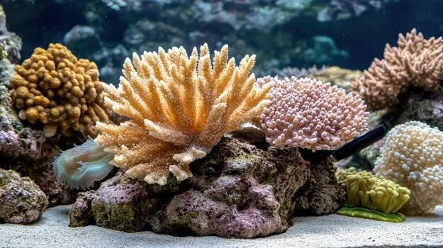

Nuestro proyecto
El objetivo de este proyecto principalmente se basa en identificar un microorganismo simbionte encontrados conviviendo en unas corales junto a la biodiversidad marina en la litoral mediterránea.

Formación y aprendizaje previo al proyecto
Durante la primera fase del proyecto, se aprovechó para proporcionar una formación básica/intermedia a los integrantes del grupo Dualiza, sobre los temas de biología con el que estarán involucrados durante el procedimiento del desarrollo de la investigación de estos microorganismos no identificados. Este proceso de formación inicial proviene de:
- El poco conocimiento biológico de parte de los participantes, el cual era importante para poder entender y adaptar los parámetros necesarios para poder llevar a cabo la investigación de manera correcta y eficiente.
- La ausencia de los datos de estos microorganismos encontrados los cuáles sin esos no había posibilidad de análizar nada.
Llegado el més de abril, Juan Anonio García Lopez, profesor a cargo de la investigación y del alumnado participante de este proyecto; y Luis Flores, alumno del grupo Dualiza, realizaron un viaje directo a la obtención de las secuencias de los microorganismos a identificar. Durante esa semana de viaje, conocieron y aprendieron varias cosas en el Museo de Historia Natural de Viena, donde aguardan datos y muestras de incluso 1 siglo de antigüedad.